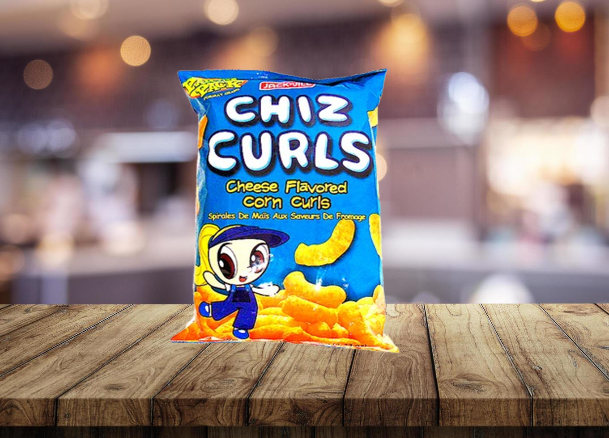
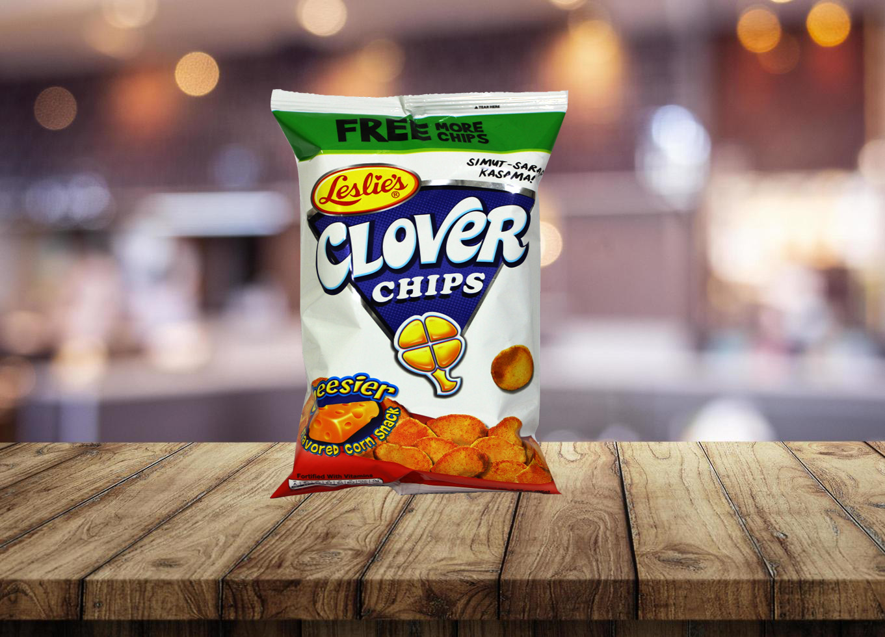
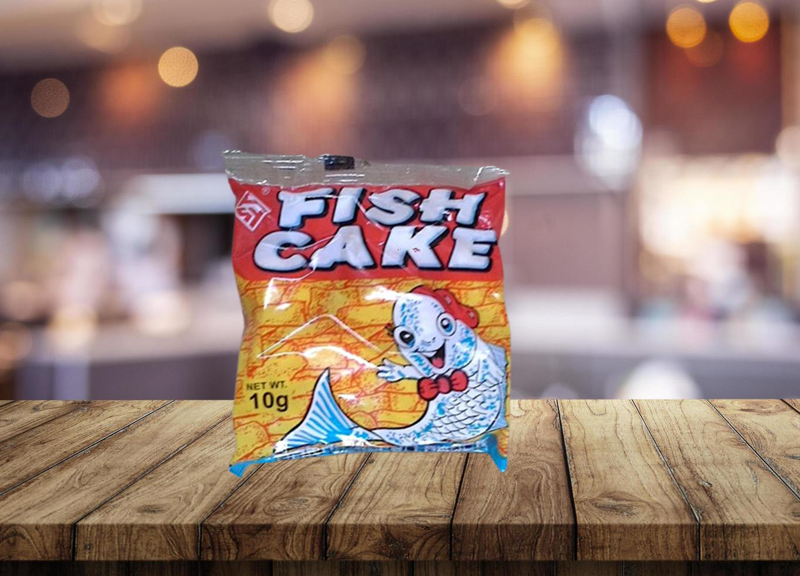
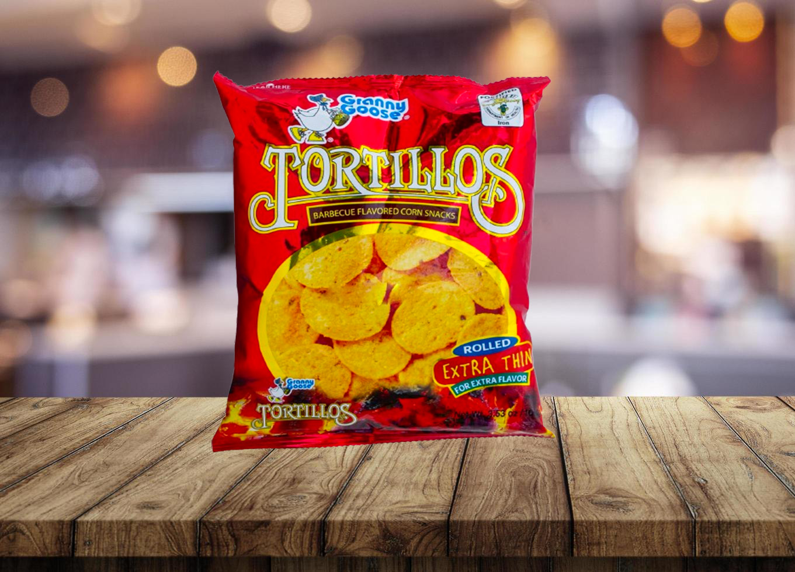

chippy

chiz curls

clover

fish cake

lala

loaded

Martys

Mr Chips

Piattos

Tortillos

V Cut
chippy
- Every Filipino is familiar with the original CHIPPY, recognizable by its distinctive red packaging. These crunchy corn chips were likely barbecue-flavored, evoking nostalgia for many.
- In recent decades, Jack n Jill (Universal Robina Corporation) has introduced various flavor variants of CHIPPY, including Chili & Cheese in blue packs and Garlic & Vinegar in green packs.
- The ingredients for the BBQ variant include corn, vegetable oil, and a blend of barbecue flavorings such as yeast, MSG, salt, sugar, spices, maltodextrin, hydrolyzed soy and corn proteins, tricalcium phosphate, rusk powder, natural flavors, mustard seed, silicon dioxide, caramel color, and artificial flavors. Additionally, iodized salt, monosodium glutamate, onion powder, garlic powder, ferrous sulfate, pepper, and antioxidants (butylated hydroxyanisole, butylated hydroxytoluene, propyl gallate) are listed.
- The allergen statement indicates that CHIPPY contains soy, wheat, and mustard ingredients.
LALA
- La La Fish Crackers are thick, salty fish crackers which is made from wheat and rice flour. It is perfect to eat while watching movies and it can be take on go. It is tasty and healthy.
- The ingredients are Wheat Flour (Gluten), Cassava Starch, Vegetable Oil (Palm & Coconut Oil), Sugar, Rice Flour, Fish Sauce (Water, Anchovy Fish, Salt), Onion Powder, Flavour Enhancer (E621), Salt, Garlic Powder, Cayenne Pepper, Colours (E102, E110).
- The allergen statement indicates that LA LA contains Wheat Gluten, Fish.
LOADED
- Loaded White Chocolate & Nutty Choco filled snack is a crunchy snack with a light white chocolate filling. Delicious crisp and creamy taste.
- they introduced various flavor variants of loaded, including nutty choco-filled (in brown pack), choco-filled (in yellow pack), Cheese-filled (in caramel pack).
- The allergen statement indicates that CLOVER contains milk.
Marty's
- Vegetarian Chicharon Old-fashioned Style.
- they introduced various flavor variants of marty's, including chicken inasal, bacon and salt & vinegar.
Mr Chips
- Triangular shaped corn chips loaded with mucho nacho cheese that spell a whole lot of fun and a whole lot of goodness. You just don't bite your mr. chips chip. You go all out and gobble them all up.
Piattos
- Get ready to indulge in cheesy goodness with Jack 'n Jill Piattos, the latest addition to our snack lineup! These mouthwatering Cheese Flavored Potato Crisps are sure to delight your taste buds and keep you coming back for more. Made with real cheese, these crispy, crunchy crisps are the perfect way to satisfy your cheesy cravings. The unique shape of Piattos makes them ideal for dipping in your favorite sauce or enjoying straight from the bag. Whether it's movie nights, game days, or a simple afternoon snack, Jack 'n Jill Piattos are crafted with high-quality ingredients for your enjoyment. Embrace the cheesiness with Jack 'n Jill Piattos, Cheese Flavored Potato Crisps! Try them today and let the cheesy goodness sweep you away.
V cut
- Introducing Jack 'n Jill Vcut Potato Chips in Spicy Barbecue Flavor, the ultimate snack for spice enthusiasts. Crafted from the finest potatoes and cooked to crispy perfection, these chips offer a satisfying crunch with every bite. The spicy barbecue flavor features a tantalizing blend of spices that will awaken your taste buds. Whether as a standout addition to party platters or a tasty snack during sports games, these chips are sure to impress. Try Jack 'n Jill Vcut Potato Chips in Spicy Barbecue today and savor the fiery and tangy flavors.